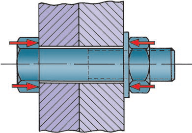

Con la utilización de elementos atornillados se pretenden conseguir uniones entre diferentes piezas, en las que se trata de impedir su separación en la dirección de los ejes de los tornillos.
Los esfuerzos de compresión se consiguen mediante un óptimo cerramiento de la unión atornillada.


